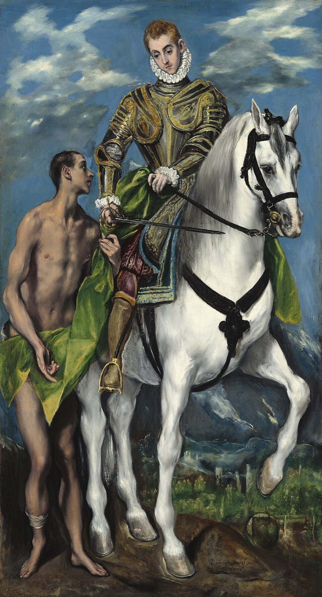
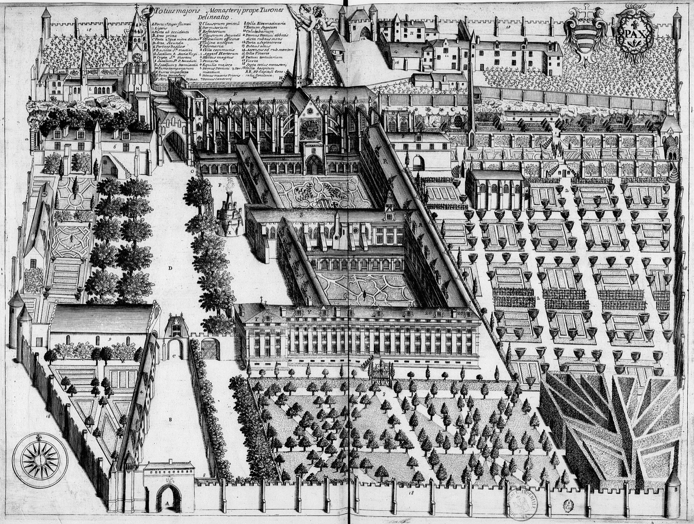
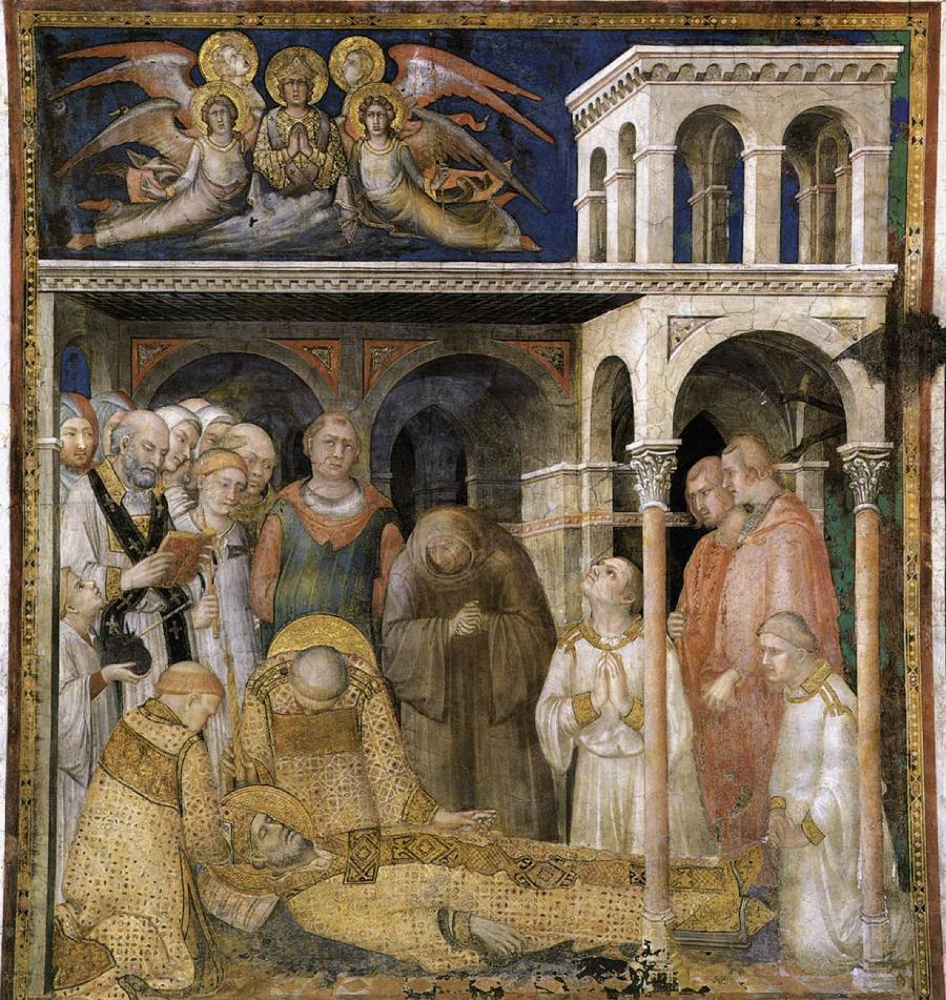

Chi ce lo racconta
Quasi tutto ciò che sappiamo di Martino viene da un solo autore, Sulpicio Severo: un avvocato dell'Aquitania che, colpito dalla sua fama, andò a conoscerlo a Tours e ne divenne discepolo. La sua Vita di Martino fu scritta intorno al 396, quando il vescovo era ancora vivo; la completano tre lettere, una delle quali ne narra la morte, e i Dialoghi. È il racconto di un ammiratore, pieno di miracoli, ma anche di ricordi diretti, e divenne il modello di tutte le vite di santi del Medioevo. Due secoli dopo Gregorio, successore di Martino a Tours, aggiunse i racconti dei prodigi avvenuti presso la tomba.
Dalla Pannonia a Pavia
Martino nasce a Sabaria, in Pannonia: è l'odierna Szombathely, in Ungheria. Il padre, un soldato salito fino al grado di tribuno, gli dà un nome che viene da Marte, il dio della guerra. La famiglia è pagana. Ancora bambino Martino segue i genitori a Ticinum, cioè Pavia, dove cresce. A dieci anni, contro la volontà dei suoi, chiede di essere accolto fra i catecumeni; a dodici sogna già la vita dell'eremo.
Il soldato
Una legge obbliga i figli dei veterani ad arruolarsi, e a quindici anni Martino entra nella cavalleria della guardia imperiale. Sulpicio lo descrive come un soldato diverso dagli altri: tiene con sé un solo servo, e spesso è lui a servirlo a tavola e a togliergli i calzari.
Di stanza in Gallia, alle porte di Amiens incontra il povero con cui divide il mantello; poco dopo riceve il battesimo. (L'episodio è raccontato nella pagina Il mantello.)

Il congedo avviene presso Worms, alla vigilia di una battaglia contro gli Alamanni. Il cesare Giuliano distribuisce un donativo ai soldati; Martino lo rifiuta e chiede di essere lasciato libero.
«Finora ho militato per te; lascia che adesso militi per Dio. Sono soldato di Cristo: combattere non mi è lecito.»
Sulpicio Severo, Vita di Martino, 4
Accusato di viltà, si offre di restare l'indomani davanti alle schiere nemiche senza armi, protetto dal solo segno della croce. Non ce n'è bisogno: il giorno dopo, racconta Sulpicio, i nemici mandano a chiedere la pace.
Discepolo di Ilario
Martino raggiunge a Poitiers il vescovo Ilario, il grande difensore della fede di Nicea contro l'arianesimo, che lo ordina esorcista. Poi riparte per la Pannonia, deciso a portare la fede ai genitori: la madre si converte, il padre no. Per essersi opposto ai vescovi ariani viene frustato in pubblico e cacciato dalla sua città. Ilario intanto è stato mandato in esilio; Martino si ferma a Milano, ma il vescovo ariano Aussenzio lo allontana anche da lì. Si ritira allora sull'isola Gallinara, davanti ad Albenga, dove vive da eremita nutrendosi di radici.
Quando Ilario torna dall'esilio, nel 360, Martino lo raggiunge e si stabilisce in un luogo solitario poco fuori Poitiers, a Ligugé. Presto altri si uniscono a lui: nasce così, intorno al 361, una delle prime comunità monastiche dell'Occidente.
Vescovo suo malgrado
Nel 371 la sede di Tours resta vacante e il popolo vuole Martino. Per farlo uscire dal monastero un cittadino, Rusticio, finge che la moglie sia malata e lo supplica di venire a visitarla; lungo la strada la folla lo circonda e lo conduce in città. Alcuni dei vescovi presenti trovano indegno dell'episcopato quell'uomo «dall'aspetto dimesso, dalle vesti sudice, dai capelli in disordine». Il popolo non li ascolta.
Da vescovo Martino non cambia vita. Si stabilisce fuori città, sulla riva della Loira, in una capanna di legno; intorno a lui si raccolgono un'ottantina di discepoli, che vivono nelle grotte della rupe, mettono tutto in comune e si vestono di pelo di cammello. È il «grande monastero», Maius monasterium: Marmoutier.

Soprattutto, Martino cammina. Nel IV secolo il cristianesimo è una religione di città, e le campagne sono rimaste ai vecchi culti: tanto che «pagano» viene da pagus, il villaggio. Martino percorre la sua diocesi e ben oltre, a piedi o a dorso d'asino, predica, abbatte i santuari e gli alberi sacri, e al loro posto lascia una chiesa e un gruppo di monaci. Le prime parrocchie rurali della Gallia nascono così.
Davanti ai potenti
Martino non ha soggezione degli imperatori. A Treviri, alla tavola dell'usurpatore Magno Massimo, quando gli viene offerta la coppa perché la passi poi al sovrano, la porge invece al prete che lo accompagna. A Treviri torna per difendere Priscilliano, un vescovo spagnolo accusato di eresia: Martino ne respinge le dottrine, ma sostiene che a un eretico basta la condanna dei vescovi e che un tribunale civile non deve versarne il sangue. Massimo gli promette clemenza; partito Martino, nel 385, Priscilliano viene decapitato con alcuni compagni. È la prima condanna a morte per eresia della storia cristiana. Martino ne resta segnato, e da allora evita le assemblee dei vescovi.
La morte a Candes
Nell'autunno del 397, ormai ottantenne, Martino si reca a Candes, alla confluenza della Vienne con la Loira, per riportare la pace fra i chierici di quella chiesa. Lì lo coglie la febbre. Ai discepoli che lo pregano di non lasciarli risponde con la preghiera rimasta famosa: «Signore, se sono ancora necessario al tuo popolo, non ricuso la fatica». Vuole morire disteso sulla cenere, con il volto verso il cielo. È l'8 novembre.

Il corpo viene riportato a Tours risalendo la Loira. Ai funerali, l'11 novembre, accorre tutta la città, con la gente delle campagne e quasi duemila monaci.
In breve
- 316 circa Nasce a Sabaria, in Pannonia; cresce a Pavia.
- 331 circa Entra nella cavalleria imperiale.
- 335 circa Ad Amiens divide il mantello con un povero; riceve il battesimo.
- 350 Ilario diventa vescovo di Poitiers.
- 356 Lascia l'esercito presso Worms e raggiunge Ilario.
- 357-360 Pannonia, Milano, isola Gallinara.
- 361 circa Fonda la comunità di Ligugé.
- 371 È acclamato vescovo di Tours; poco dopo fonda Marmoutier.
- 380 Editto di Tessalonica: il cristianesimo niceno religione dell'Impero.
- 385 A Treviri tenta invano di salvare Priscilliano.
- 8 novembre 397 Muore a Candes.
- 11 novembre 397 È sepolto a Tours.